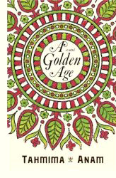

|
1. Poetry
Shamsur Rahman
|Humayun
Azad |Nirmalendhu Goon |fatemolla
|
Faruque Azam
2.
Short Stories
3. Novel

Title:
A Golden Age
Author:
Tahmima Anam
Publisher:
John Murray
Year: 2007
Comment: “A
Golden Age is a stunning debut� -
Clemency Burton-Hill, Observer
URL:
www.tahmima.com
4. Non-fictions

[Arranged alphabetically, according
to the titles]
Title:
A SOCIO_POLITICAL HISTORY OF BENGAL & BIRTH OF BANGLADESH
Author:
Kamruddin Ahmad.
Publisher: Inside
Library
Year: 1975.
Title:
A Tale of Millions : Bangladesh Liberation
War - 1971
Author:
Maj. Rafiqul Islam, Bir Uttam
Publisher: Ananna
Year: 1986 (Third
Edition)
Review by Abdul M. Ismail: "An authoritative account
of Captain Rafiqul Islam, an East Pakistan Rifles (EPR) Company Commander
who, like numerous other Bengali Officers took up arms and rebelled against
their (West) Pakistani counterparts. The author shows his frustration of
lack of logistical support, indiscipline of non-military personnel and
shares his thoughts by his criticising his superior officers. An interesting
observation was the recruitment of student leaders and educated individuals
by Indian Intelligence. These 'elite' Bengalis were given superior training,
arms and ammunition and operated under the Operational Layout of the Indian
Armed Forces rather than under a unified command structure of (and much to
the annoyance of the) Bangladesh Military . The second half of the book is
dedicated to activities which occurred in other sectors and includes
operational activities of the naval commandos who specifically targeted
military and supply vessels."
Title:
Against Our Will: Men, Women and Rape
Author:
Susan Brownmiller
Publisher:
Fawcett Books
Year:
1993 [reprint edition]
Title:
Bangladesh at War
Author:
Maj. Gen. K. M. Safiullah, psc., Bir Uttam
ISBN:
984-08-0109-0
Publisher:
Academic Publishers
Year: 1995 (Second
Edition)
Review by Abdul M. Ismail: "An excellent account
from a Sector Commander and Bangladesh's First Army Chief of Staff, who
describes the Mukti Bahini's continual confrontation with the (West)
Pakistani military from the point of desertion to the surrender ceremony at
the Ramna Race Course. Failed attempts and losses of both men and equipment
whilst employing conventional tactics with vastly inferior equipment and
lack of air support/artillery forced the Freedom Fighters to use guerrilla
tactics. This approach, as Brig. Siddiq Salik states, proved to have had an
adverse affect on the (West) Pakistani soldiers towards the closing days of
the campaign. Due credit is given to all other Sector Commanders and
includes a summary of events and tactics used which occurred other areas of
the country during the conflict. This is the only book written by a Bengali
Officer on the 1971 campaign which is known to be in the libraries of the
Pakistani Military Academy."
Title:
Bangla desh Documents [Bangladesh-1971]
Publisher:
Ministry of External Affairs, New Delhi, India
Year:
Comment: "This
collection of documents is intended to provide to the world a primary source
of information on developments pertaining to the crisis that overtook East
Bengal in March 1971."
Title:
BANGLADESH GENOCIDE AND WORLD PRESS
Author:
FAZLUL QUADER QUADERI
[compiler & editor]
Publisher:
Year:
Title:
Bangladesh in Blood and Tears
Author: Jyoti Sen Gupta
Publisher: Calcutta : Naya Prokash
Year: 1981
Title:
BANGLADESH, THE UNFINISHED REVOLUTION
Author:
Lawrence Lifschultz
Publisher: ZED
Press
Address: 57,
Caledonia Rd, London.
Year: 1979
Title:
Century of Genocide: Eyewitness Accounts and Critical Views
Author:
Samuel Totten et al., eds.
Publisher:
Garland Reference Library
Year: 1997
Comment: “A first-rate collection of readings on genocide, including
the slaughter in Bangladesh.�
Title:
Death By Government
Author:
R.J. Rummel
Publisher:
Transaction Publishers
Year: 1997
Comment: “One of the most detailed treatments of the genocide in
Bangladesh.�
Title:
DISCOVERY OF BANGLADESH
Author:
Stephen M. Gill
Publisher: The
Uffington Press
Address: Melksham,
Wiltshire, U. K.
Year: 1973.
Title:
Genocide in East Pakistan/Bangladesh: A
Horror Story
Author:
S. K. Bhattacharyya
Publisher:
A. Ghosh Publishers
Year: 1988
Title:
India's Wars Since Independence - The Liberation of Bangladesh-Vol1
Author:
Maj.-Gen. Sukhwant Singh
ISBN: 07 06 91 05
75
Publisher: Stosius
Inc., Advent Books Division
Title:
Massacre
Author:
Pierre Stephen and Robert Payne
ISBN:
ISBN 0-02-595240-4
Publisher:
McMillan, New York
Year: 1973
Review: "Robert Payne examines the tragic
events that surrounded the birth of Bangladesh and looks at the phenomenon
of mass slaughter throughout history." [Source:
Asia
Bookroom]
Title:
Of Blood and Fire : The
Untold Story of Bangladesh's War of Independence
Author:
Jahanara Imam translated by Mustafizur Rahman
Publisher:
Academic Publishers
Year: 1991 (Second
Edition)
Review by Abdul M. Ismail:
"Originally published in
Bengali, February 1986 under the title of 'The Days of '71', the book was
eventually translated to English. This afforded a wider audience to
experience the events in Dhaka up to, during and after the military
crackdown. Written in the format of a day-to-day diary, the author provides
a touching account of her family's involvement, and those around her, with
the struggle for independence. The emotions and concerns of a wife and
mother are heartfelt and will leave readers with lasting distaste for war
and conflict."
Title:
PAKISTAN CRISIS
Author:
David Loshak
Publisher:
McGraw-Hill Book Company
Year: 1971.
Title:
Surrender at Dacca : Birth of a Nation
Author:
Lt. Gen. JFR Jacob
ISBN: 984 05 1395
8
Publisher: The
University Press Limited
Year: 1997
Review by Abdul M. Ismail: "Written by India's Chief
of Staff (Eastern Wing) during the 1971 War, the then Maj. Gen. Jacob
describes the all important logistical aspects and reasoning behind the
delay with military intervention of the Indian Army, Navy and Air Force
until the latter part of 1971. Co-ordination between the three services and
integration of (plus the role played by the) Mukti Bahini is well documented
hence adding the aspect of realism of the campaign to liberate Bangladesh."
Title:
THE BANGLADESH REVOLUTION & AFTERMATH
Author:
Talukder Maniruzzaman
Publisher:
Bangladesh Book International
Year:
1980.
Title:
The Crisis on the
Indian Subcontinent and the Birth of Bangladesh: A Selected Reading List
Author:
Ved P. Kayastha
[compiler & editor]
Publisher:
South Asia Program. Cornell University
Year: 1972 [Revised and enlarged edition]
Title:
THE LIGHTNING CAMPAIGN
Author:
Maj-Gen. D. K. Palit
Publisher:
Thompson Press(India) Ltd
Year: 1972.
Title:
The Liberation War
Author:
MOHAMMED AYOOB AND K. SUBRAHMANYAM
Publisher:
New Delhi. Chand.
Year: 1972
[reprint].
Comments: "An in-depth exploration of the
war of liberation that bought about Bangladesh. The authors discuss the
phenomenon of internal colonialism which led to the autonomy movement in
Bangladesh, how far the US military assistance programme fostered the
miliarism and a military bureaucratic statism in Pakistan, the unique
character of the alienation of the Pakistan Army from the people of
Bangladesh and the resultant genocide and the implications of international
indifference."
Title:
The Year That Was
Author:
Ishrat Firdousi
Publisher: Bastu
Prakashan
Year: 1996
Review by Abdul M. Ismail: "The book is a collection
of short stories and portrays individual experiences of over 70 people
during the nine month military crackdown. They neither promote themselves as
heroes nor victims but as observers and participants to what culminated to
the formation of an independent nation. The inclusion of transcripts by
(West) Pakistanis and Biharis, albeit limited in number, is a welcome
addition to the compilation. Several narration's by Bengalis point out the
difficult situations which some (West) Pakistani civilians had to endure
during the conflict."
Title:
War and Secession: Pakistan, India, and the Creation of Bangladesh
Author:
Richard Sisson and Leo E. Rose
Publisher:
University of California Press
Year: 1991
Comment: “One of the best recent pieces of scholarship on the war and
genocide in East Pakistan/Bangladesh.�
Title:
Witness to Surrender
Author:
Siddiq Salik
ISBN: 984 05 1373
7
Publisher: The
University Press Limited
Year: 1997 (first
published in 1977 by Oxford University Press, Karachi)
Review by Abdul M. Ismail: "An interesting
perspective by a (West) Pakistani Officer on the 1971 conflict. The
deployment and actions taken by the occupational forces can be confirmed by
cross examination from other text written in military format (see Maj. Gen.
KM Safiullah (Bangladesh) and Lt. Gen. JFR Jacob (India) below for further
details). What is an arousing observation is when the author re-lives the
events leading up to Mujib's arrest and the one sided dialogue which took
place prior to that event."
[Acknowledgement: 1.
Virtual Bangladesh 2.
Prevent Genocide 3.
Asia Bookroom
]
[Back to
Archive: 1.
Main Page 2.
English Index
3.
Bangla Index]
[This page was last
updated on 12.25.2007]
|